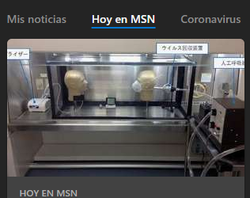

Un equipo de la Universidad de Tokio ha demostrado con un experimento cómo pueden prevenir las mascarillas
faciales el contagio del nuevo coronavirus aunque con una protección algo menor en el caso de las de tela frente a las quirúrgicas.
Según declaró a la cadena pública de televisión NHK Yoshihiro Kawaoka, del Instituto de Ciencias Médicas de la
Universidad de Tokio, no ha habido previamente otros experimentos parecidos trabajando con virus reales.
La prueba se realizó con un simulador de infección del virus SARS-CoV-2 usando dos cabezas de maniquíes colocadas frente a frente
dentro de una vitrina, una de ellas con un nebulizador descargando el virus y la otra dotada de un ventilador imitando la respiración humana.
Con el emisor descubierto, el receptor que estaba protegido con una mascarilla de tela tuvo una reducción de entre el 20 y el 40 % en la absorción de virus y de entre el 47 y el 50 % con una mascarilla quirúrgica común.
En cambio, con una N95 colocada apropiadamente la reducción fue de entre el 79 y el 90 %.
Cuando al emisor le colocaron una mascarilla, de tela o quirúrgica desechable,
el contagio del receptor, que estaba descubierto, se redujo en más del 70 % en ambos casos,
mientras que con la N95 colocada apropiadamente se alcanzó casi el 100 %.
De cualquier forma, Kawaoka, jefe del equipo que realizó el experimento, advirtió de que el
uso de mascarillas no evita completamente la infección con el virus. "Lo importante es no fiarse demasiado de las mascarillas", agregó.
Microsoft News 22/10/2020